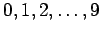

Eine Tabelle von Zufallszahlen könnte man auf folgende Weise erzeugen: Auf zehn gleichen Chips sei jeweils eine der zehn Ziffern  eingeprägt. Diese zehn Chips werden in einem Gefäß gut gemischt. Danach wird ein Chip gezogen und seine Ziffer in einer Tabelle festgehalten. Der Chip wird wieder in das Gefäß zurückgelegt. Es wird erneut gemischt und die Ziehung wiederholt. Auf diese Weise entsteht eine Reihe von Zufallszahlen, die aus Gründen der Übersichtlichkeit z.B. in Gruppen zu je vier zusammengfaßt werden (s. Tabelle Zufallszahlen).
Die Verfahren, nach denen Zufallszahlen aufgestellt werden, müssen sichern, daß die Ziffern an jeder Stelle der vierstelligen Zahlen gleichwahrscheinlich sind.